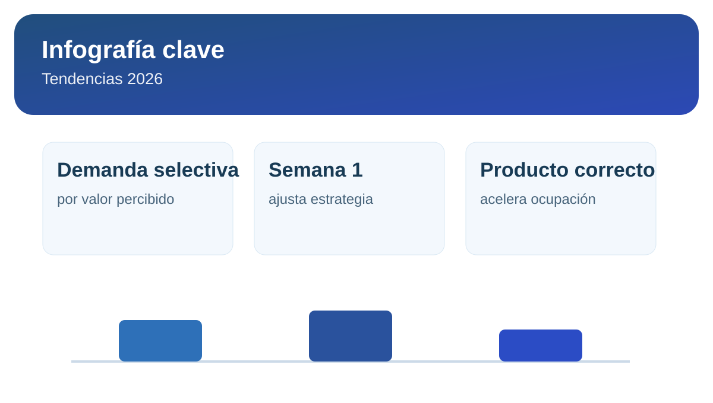

Tendencias 2026: zonas con mayor demanda de alquiler

El mercado de alquiler en Lima entra a 2026 con una demanda más segmentada: el inquilino prioriza ubicación útil, conectividad y costo total mensual por encima de metrajes grandes.
1. Qué zonas muestran mayor dinamismo
Distritos con buena conectividad y oferta de servicios siguen concentrando búsquedas. Para propietarios, eso significa menos vacancia cuando precio, producto y publicación están bien alineados.
2. Qué tipología se mueve mejor
- Unidades compactas bien ubicadas.
- Departamentos con 2 dormitorios funcionales.
- Inmuebles con propuesta clara de valor frente al precio.
3. Cómo adaptar tu estrategia de salida
El mejor resultado aparece cuando ajustas rápido durante la primera semana: mejora de portada, optimización del texto, revisión de rango de precio y filtro comercial más firme del inquilino.
Infografía rápida: señales 2026

4. Decisión práctica para propietarios
Si quieres alquilar rápido y sin perder rentabilidad, combina lectura de tendencia con una simulación de precio y un proceso de evaluación de inquilinos consistente.
Convierte esta tendencia en una salida comercial aterrizada a tu depa.
Simular precio de alquiler